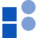
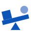

Tipped tiles


EvidenceTune Demo
The Unde grid, weighed: the evidence squares sink, the pushback circles rise
In the style of the Unde Labs mark: bold tiles, two tones, no lines. Squares are heavy evidence, circles are light pushback.


The Unde grid, weighed: the evidence squares sink, the pushback circles rise


A solid beam on a fulcrum: the heavy square of evidence holds its end down, the light circle lifts

Two pans in quarter-circles, like Unde's: the one holding evidence sits lower
Closest to Unde: four parts assembled, three solid, one light circle left out of the stack